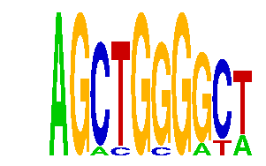

family_17 |
|---|
|  |
| Download PWM |
| Download instances (motifs) |
| Show motif distribution |
Query_ID | Query_Consensus | Subject_Name | Source_DB | Subject_ID | Length | Orientation | Offset | Divergence | Overlap | Subject_Consensus |
|---|---|---|---|---|---|---|---|---|---|---|
| family_17 | AGCTGGGGCT | CAGCTG | JASPAR | PF0015 | 6 | as given | -1 | 0.415 | 5 | CAGCTG |
| family_17 | AGCTGGGGCT | CAGCTG | JASPAR | PF0015 | 6 | reverse-complement | -1 | 0.415 | 5 | CAGCTG |
| family_17 | AGCTGGGGCT | MYOD1 | HOCOMOCO | MYOD1_HUMAN.H10MO.C | 9 | reverse-complement | -3 | 0.872 | 6 | SCASCTGTC |
| family_17 | AGCTGGGGCT | TGACAGNY | JASPAR | PF0041 | 8 | as given | -4 | 0.880 | 4 | TGACAGNT |
Sequence | Start_position (from start) | Start_position (from end) | Average conservation | Best conservation score | Instance_with_best_CS | Best_Z-score | Instance_with_best_ZS | Strand |
|---|---|---|---|---|---|---|---|---|
| chr7:148085594-148086594 | 731 | 741 | 0.1253 | 0.298 | AGCYGGGGCW | 14.384357 | AGCTGSGGYT | 1 |
| chr5:122509178-122510178 | 664 | 674 | 0.0062 | 0.022 | AGCTGSGGYT | 14.384357 | AGCTGSGGYT | 1 |
| chr11:104438402-104439402 | 1014 | 1024 | 0.0007 | 0.002 | AGCTGGGRYT | 14.384357 | AGCTGSGGYT | -1 |
| chr5:77543537-77544537 | 574 | 584 | 0.0007 | 0.003 | AGCTGGGRYT | 14.384357 | AGMTGGGRCT | 1 |
| chr14:55577748-55578748 | 769 | 779 | 0.5554 | 0.741 | AGMTGGGRCT | 12.697031 | AGCTGGGRYT | 1 |
| chr1:191747532-191748532 | 597 | 607 | 0.0106 | 0.032 | AGCYGGGGCW | 12.697031 | AGCYGGGGCW | 1 |
| chr19:36189355-36190355 | 270 | 280 | 0.0005 | 0.002 | AGCTGGGGYW | 12.697031 | AGCTGGGGYW | -1 |
| chr12:25785249-25786249 | 18 | 28 | 0.0087 | 0.065 | AGCTGSGGYT | 12.697031 | AGCTGGGRYT | -1 |
| chr15:76829089-76830089 | 320 | 330 | 0.0293 | 0.073 | AGCTGGGGYW | 14.384357 | AGCTGSGGYT | 1 |
| chr19:6384514-6385514 | 556 | 566 | 0.7497 | 0.939 | AGCTGGGGYW | 12.697031 | AGCYGGGGCW | 1 |
| chr7:149846298-149847298 | 502 | 512 | 0.0009 | 0.004 | AGCYGGGGCW | 12.697031 | AGCTGGGGYW | 1 |
| chr2:113882810-113883810 | 900 | 910 | 0.4169 | 0.994 | AGMTGGGRCT | 14.384357 | AGMTGGGRCT | 1 |
| chr1:75365769-75366769 | 793 | 803 | 0.0014 | 0.01 | AGCTGGGRYT | 12.697031 | AGCTGGGGYW | 1 |
| chr14:55598649-55599649 | 347 | 357 | 0.0006 | 0.002 | AGMTGGGRCT | 14.384357 | AGCTGSGGYT | -1 |
| chr9:25060245-25061245 | 613 | 623 | 0.5931 | 0.756 | AGCTGSGGYT | 12.697031 | AGCTGGGRYT | 1 |
| chr2:70997831-70998831 | 63 | 73 | 0.1455 | 0.177 | AGCTGSGGYT | 12.697031 | AGCTGGGGYW | 1 |
| chr4:55294133-55295133 | 311 | 321 | NA | NA | AGCTGGGRYT | 14.384357 | AGCTGSGGYT | 1 |
| chr13:12429959-12430959 | 524 | 534 | 0.0011 | 0.002 | AGCTGGGRYT | 14.384357 | AGCTGSGGYT | 1 |
| chr14:21483110-21484110 | 537 | 547 | 0.7412 | 0.987 | AGCTGSGGYT | 12.697031 | AGCYGGGGCW | 1 |
| chr15:76843572-76844572 | 439 | 449 | 0.0044 | 0.009 | AGCTGSGGYT | 14.384357 | AGMTGGGRCT | -1 |
| chr3:96879958-96880958 | 644 | 654 | 0.0036 | 0.01 | AGMTGGGRCT | 14.384357 | AGMTGGGRCT | 1 |
| chr8:23616506-23617506 | 589 | 599 | 0.0121 | 0.03 | AGCTGSGGYT | 14.384357 | AGCTGSGGYT | 1 |
| chr4:55220837-55221837 | 91 | 101 | 0.0016 | 0.005 | AGCTGGGGYW | 12.697031 | AGCYGGGGCW | -1 |